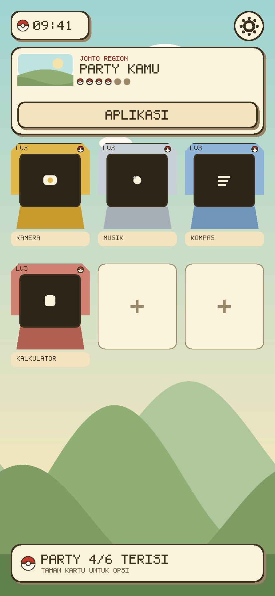

Party 6 slot
Enam aplikasi favorit sebagai kartrid GBA. Slot kosong menampilkan tanda plus, dan label KOSONG.
Home screen HeartGold · Kotlin + Jetpack Compose
Klik perangkat untuk melihat tampilan lain. Gambar dibuat dari palet dan tata letak asli di kode, bukan render emulator.

Semua elemen digambar dari kode Compose — tidak ada aset berhak cipta.
Enam aplikasi favorit sebagai kartrid GBA. Slot kosong menampilkan tanda plus, dan label KOSONG.
Langit gradien, matahari, bukit berlapis, dan rumput — digambar via Canvas, dengan scrim kertas agar teks tetap terbaca.
Di ≥ 700 dp kartu pemain jadi satu baris, enam kartrid sejajar, dan setelan muncul sebagai panel samping 380 dp.
Menu START, app drawer dengan pencarian, info aplikasi, serta permintaan role HOME langsung dari dialog.
HarmonyOS 4.3 masih berbasis Android 12 (API 31), jadi APK dipasang native.
Setelan → Tentang tablet → ketuk Nomor versi 7×. Lalu Setelan → Sistem → Opsi developer → aktifkan Izinkan pemasangan via USB dan Instal aplikasi tak dikenal.
Buka dari browser tablet:
releases/download/apk-latest/pokelauncher-debug.apk
± 10,6 MB · diperbarui setiap build sukses
Buka PokeLauncher → menu START → JADIKAN HOME DEFAULT → tombol JADIKAN HOME. Dialog izin sistem muncul tanpa perlu masuk Setelan.
Setelan → Keamanan → Pemindaian keamanan → matikan untuk PokeLauncher, lalu pasang ulang.